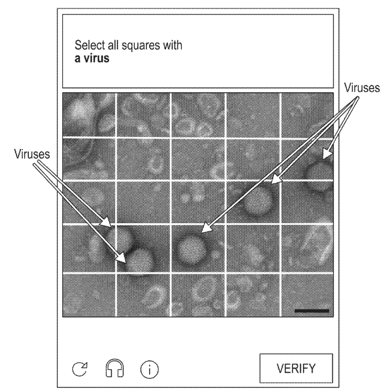

Why AI?
Once trapped by the electrospray capture technology, a method that charges tiny water droplets to attract and trap airborne pathogens, the AI detection CAPTCHA (Completely Automated Public Turing test to tell Computers and Humans Apart) analyzes them to identify what kind of pathogen it is. This method is quick and can be done in real-time, making it a powerful tool for early detection of diseases and potentially stopping outbreaks before they spread. This method stands out by offering precise identification capabilities that improve with exposure to more data than traditional diagnostic techniques.
How it works

In this image you can see how the AI captcha technology identifies where microbiles are located and subsequently analyzes the selected bacteria or virus against an existing database in order to archive the data.
Is it Reliable?
There are several examples of where the use of AI detection systems have been accurate and efficient in healthcare.
According to a 2017 study, AI models for breast cancer showed a reduction in false positives by 5.7% and false negatives by 9.4%. AI algorithms also showed 87.6% accuracy in early stroke detection and 94% accuracy in early-stage lung cancer detection, surpassing traditional diagnostic methods. This indicates a promising future for AI in healthcare, especially in enhancing early detection and treatment outcomes.
Scientists have been exploring machine learning and deep learning for early disease prediction from liver and heart
diseases to Alzheimer's, and various cancers. They've applied deep learning in diagnosing pneumonia from chest X-rays and
explored CT scan features for different conditions. Efforts include diagnosing skin diseases and suggesting treatments
using hybrid models and developing personal health monitoring systems with artificial neural networks (ANN). A notable
achievement is using ANN models to predict diabetes with a high accuracy of 91%.
In another study published in 2021, a technique was developed to detect brain cancer early by examining blood samples with
a unique method using the help of AI, achieving 92% accuracy. This approach is as easy as a standard blood test and could be
used to identify other cancers.